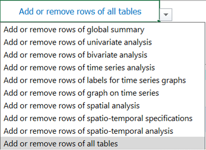
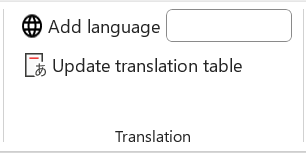
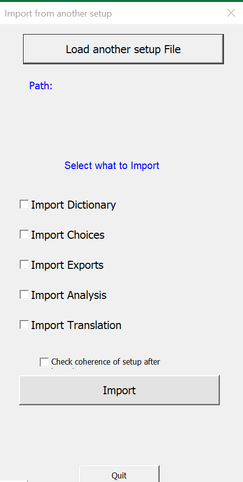
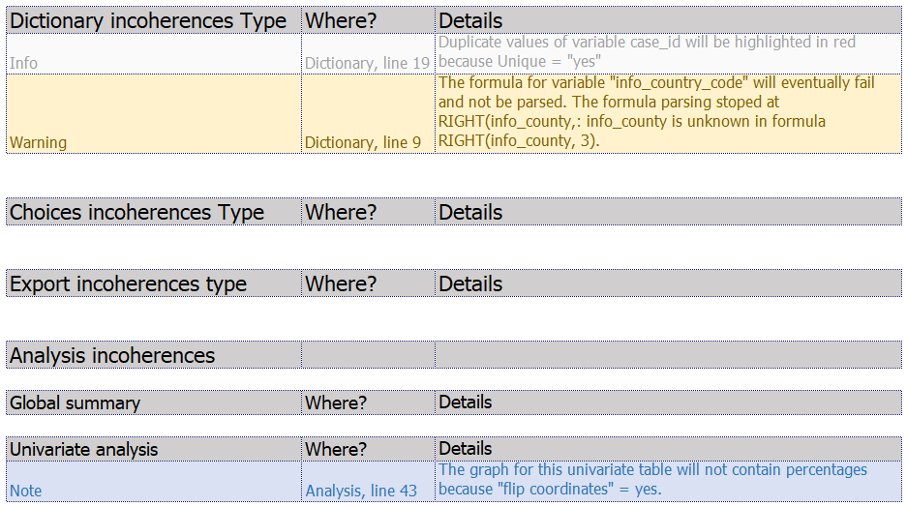
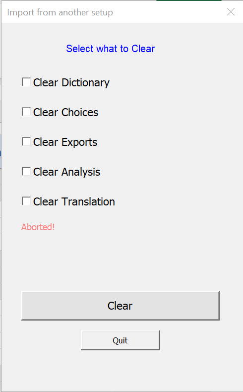

Setup ribbon
Recent version of Excel have a top ribbon/menu that display most buttons and functionalities in several tabs. Outbreaktools files (setup, designer and linelists) each have an extra tab in this menu containing OutbreakTools functionalities.

Table management
The buttons of this section provide action on tables within the setup: main table on the Dictionary sheet, table for choices, table for exports, tables for analyses etc.

Add rows
This button insert rows at the bottom of the table in the current sheet.
When this functionality is used in the Analyses sheet, you can use the drop-down menu in cell A1 to choose whether you want to add rows to all tables or just one in particular.

Resize table in the current sheet
This button remove empty rows (whether at the end or in the middle).
When this functionality is used in the Analyses sheet, you can use the drop-down menu in cell A1 to choose whether you want to remove empty rows to all tables or just one in particular.

Remove filters
This button clears filters. It is usefull if you have applied Excel filters in several columns, no need to track them all one by one, just clear them in one go.
Translation
This section provides functionalities for the Translation sheet.

Add language
This button adds a new column to translations sheet, to add a new linelist language.
- Fill the name of the language in the box
- Click on the button: it will add a new empty column on the right of the columns already present.
Update translation table
Click on this button to update the whole translation table. You can use it whether there is only one language or more.
The script will scrap the setup and import all the fields to be translated into the table, listed in alphabetical order.
At the end, it will open a popup window with information on the update of the translation table.

Go to the Translation sheet for more information on translations.
Import
These buttons allow to import data into an empty setup.

Import data from another setup
Use this button to migrate data from one setup file to another empty setup file1.
- Click on the button; it opens a popup window
- Click on the “Load another setup file” button. It will open a window to select the file to import data from.
- Select what to import from the original by ticking the boxes.
- Decide if you want to run a checkup of the setup file after import by ticking the box or not
- Click on the “Import” button and wait.

If you are migrating a setup to a new setup file, you should check all boxes to import everything.
You can run the coherence checks now, or do it at a later stage with the Check setup button
Import from disease (in developpment)
This button is used to import a “disease setup” from a disease Master file. This file is being piloted for Epinetwork discussions.
Advanced

Check current setup for errors
The setup file comes with a series of checks on its content to help you debug your dictionary. After adding major components to your setup file, or before compiling a linelist with the designer, you can should click on the button “Check current setup for errors” to see any errors in the “__checkRep” sheet.
There is a table for each sheet or section (in the case of analyses), with the following three columns:
Incoherences Type preceded by the name of the sheet,
Where?, which shows the name of the sheet or section and the line where the incoherence is located,
Details, which gives details of the incoherence.
There are several types information that could appear in the Incoherence column:
Info (in grey): this is not an inconsistency, but simply a piece of information about something that will not block the compilation of the linelist.
Warning (in yellow): these are problems that need to be fixed because there is a real inconsistency or problem. It could be an error in a formula, for example.2
Note (in blue): this is something that has been defined in the setup, but will not be applied, and is therefore not blocking. For example, in the analyses, certain choices are contradictory by design, such as the display of percentages, which is not authorised when you choose to invert the display of the table (horizontal display instead of vertical).

Clear data in current setup
This feature allows you to delete all the data entered in the setup file.
- Click on the button; it opens a popup window to decide which part of the setup you want to clear
- Tick boxes to select sheets to clean
- Click on the “Clear” button. It will open a window to ask you if you are very sure.

Dev
The dev tab is for the OBT developer and you can ignore it.